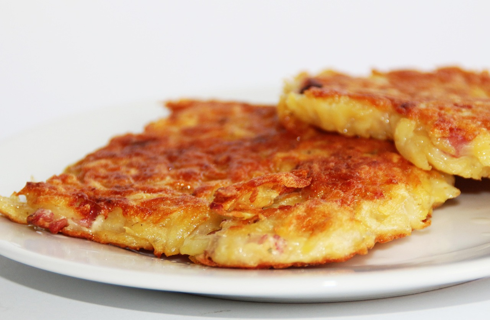

Potato Pancakes

Image by Holger Langmaier from Pixabay
Description
Potato pancakes are a dish enjoyed in many European countries, such as Germany and Ukraine. It is an easy dish that is very popular, and I recommend trying it at least once.
Ingredients
- 4 large russet potatoes
- 1 medium onion
- 2 eggs
- 1/4 cup of all-purpose flour
- 1/2 teaspoon sea salt
- 1/4 teaspoon pepper
- 2 tablespoons vegetable oil
Steps
- Peel the onions and potatoes. Once they are peeled, grate the potatoes and onions to create a potato mixture. Alternatively, instead of grating, you can cube the potatoes and onions and process them in a food processor until no lumps remain, which should take about 2 minutes.
- Use a strainer to squeeze out all of the liquid from the grating into a mixing bowl.
- Pour out the liquid. The potato starch will be left behind in the bottom of the bowl, this will be kept to give the pancakes texture.
- Add the mixture to the bowl, then add the eggs, flour, salt, and pepper. Thoroughly mix the ingredients together in the bowl.
- Use a large skillet to heat up the vegetable oil over medium heat. For each pancake, slightly spread a spoonful of the potato mixture in the skillet, then fry on each side until the pancakes are brown and crispy. This process should take 2-3 minutes for each side.
- Once they are cooked, absorb the excess oil by placing the pancakes on a paper towel. You may eat the pancakes by themself, or serve it a topping, such as sour cream, applesauce, cinnamon sugar, or yogurt.
Inspired by Tania Sheff from Cooktoria
Home